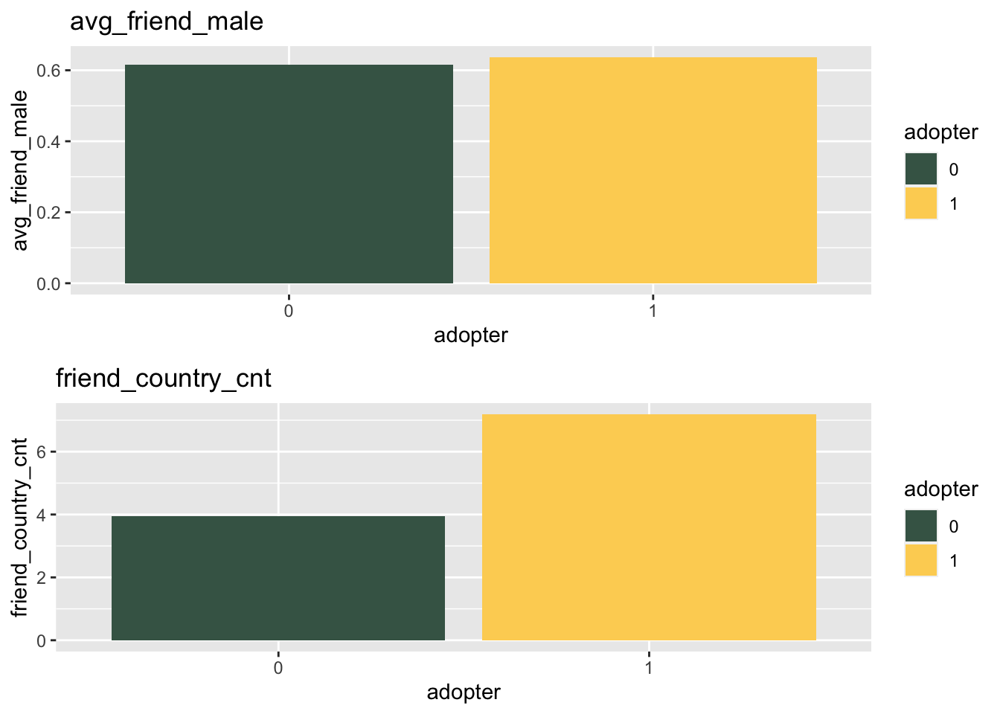

High Note premium subsciber Analysis
Huiyin(Cloris) He
3/21/2021
Part 1. Summary statistics
library(dplyr)## Warning: package 'dplyr' was built under R version 3.6.2##
## Attaching package: 'dplyr'## The following objects are masked from 'package:stats':
##
## filter, lag## The following objects are masked from 'package:base':
##
## intersect, setdiff, setequal, unionlibrary(ggplot2)## Warning: package 'ggplot2' was built under R version 3.6.2library(psych)## Warning: package 'psych' was built under R version 3.6.2##
## Attaching package: 'psych'## The following objects are masked from 'package:ggplot2':
##
## %+%, alphalibrary(wesanderson)
library(gridExtra)##
## Attaching package: 'gridExtra'## The following object is masked from 'package:dplyr':
##
## combinelibrary(MatchIt)## Warning: package 'MatchIt' was built under R version 3.6.2data=read.csv('~/Documents/UCI/3. WINTER/BANA 277. CUST & SOCIAL ANLYT/MIDTERM/HighNote Data Midterm.csv')
# Q1. Statistics ####
#statistics
stat_summary=describeBy(data, data$adopter)
stat_summary##
## Descriptive statistics by group
## group: 0
## vars n mean sd median trimmed mad
## ID 1 40300 20150.50 11633.75 20150.50 20150.50 14937.19
## age 2 40300 23.95 6.37 23.00 23.09 4.45
## male 3 40300 0.62 0.48 1.00 0.65 0.00
## friend_cnt 4 40300 18.49 57.48 7.00 10.28 7.41
## avg_friend_age 5 40300 24.01 5.10 23.00 23.40 3.95
## avg_friend_male 6 40300 0.62 0.32 0.67 0.65 0.35
## friend_country_cnt 7 40300 3.96 5.76 2.00 2.66 1.48
## subscriber_friend_cnt 8 40300 0.42 2.42 0.00 0.13 0.00
## songsListened 9 40300 17589.44 28416.02 7440.00 11817.64 10576.87
## lovedTracks 10 40300 86.82 263.58 14.00 36.35 20.76
## posts 11 40300 5.29 104.31 0.00 0.23 0.00
## playlists 12 40300 0.55 1.07 0.00 0.45 0.00
## shouts 13 40300 29.97 150.69 4.00 8.84 4.45
## adopter 14 40300 0.00 0.00 0.00 0.00 0.00
## tenure 15 40300 43.81 19.79 44.00 43.72 22.24
## good_country 16 40300 0.36 0.48 0.00 0.32 0.00
## min max range skew kurtosis se
## ID 1 40300 40299 0.00 -1.20 57.95
## age 8 79 71 1.97 6.80 0.03
## male 0 1 1 -0.50 -1.75 0.00
## friend_cnt 1 4957 4956 32.67 2087.42 0.29
## avg_friend_age 8 77 69 1.84 7.15 0.03
## avg_friend_male 0 1 1 -0.52 -0.72 0.00
## friend_country_cnt 0 129 129 4.74 38.29 0.03
## subscriber_friend_cnt 0 309 309 72.19 8024.62 0.01
## songsListened 0 1000000 1000000 6.05 105.85 141.55
## lovedTracks 0 12522 12522 13.12 335.93 1.31
## posts 0 12309 12309 73.92 7005.34 0.52
## playlists 0 98 98 28.21 1945.28 0.01
## shouts 0 7736 7736 22.53 779.12 0.75
## adopter 0 0 0 NaN NaN 0.00
## tenure 1 111 110 0.05 -0.70 0.10
## good_country 0 1 1 0.59 -1.65 0.00
## ------------------------------------------------------------
## group: 1
## vars n mean sd median trimmed mad
## ID 1 3527 42064.00 1018.30 42064.00 42064.00 1307.65
## age 2 3527 25.98 6.84 24.00 25.05 4.45
## male 3 3527 0.73 0.44 1.00 0.79 0.00
## friend_cnt 4 3527 39.73 117.27 16.00 23.69 17.79
## avg_friend_age 5 3527 25.44 5.21 24.36 24.83 3.91
## avg_friend_male 6 3527 0.64 0.25 0.67 0.65 0.25
## friend_country_cnt 7 3527 7.19 8.86 4.00 5.36 4.45
## subscriber_friend_cnt 8 3527 1.64 5.85 0.00 0.84 0.00
## songsListened 9 3527 33758.04 43592.73 20908.00 25811.69 23276.82
## lovedTracks 10 3527 264.34 491.43 108.00 161.68 140.85
## posts 11 3527 21.20 221.99 0.00 1.44 0.00
## playlists 12 3527 0.90 2.56 1.00 0.59 1.48
## shouts 13 3527 99.44 1156.07 9.00 23.89 11.86
## adopter 14 3527 1.00 0.00 1.00 1.00 0.00
## tenure 15 3527 45.58 20.04 46.00 45.60 20.76
## good_country 16 3527 0.29 0.45 0.00 0.23 0.00
## min max range skew kurtosis se
## ID 40301 43827 3526 0.00 -1.20 17.15
## age 8 73 65 1.68 4.39 0.12
## male 0 1 1 -1.03 -0.94 0.01
## friend_cnt 1 5089 5088 26.04 1013.79 1.97
## avg_friend_age 12 62 50 1.68 5.05 0.09
## avg_friend_male 0 1 1 -0.54 -0.05 0.00
## friend_country_cnt 0 136 136 3.61 24.53 0.15
## subscriber_friend_cnt 0 287 287 34.05 1609.52 0.10
## songsListened 0 817290 817290 4.71 46.64 734.03
## lovedTracks 0 10220 10220 6.52 80.96 8.27
## posts 0 8506 8506 26.52 852.38 3.74
## playlists 0 118 118 28.84 1244.31 0.04
## shouts 0 65872 65872 52.52 2969.09 19.47
## adopter 1 1 0 NaN NaN 0.00
## tenure 0 111 111 0.02 -0.62 0.34
## good_country 0 1 1 0.94 -1.12 0.01data_col=colnames(data)[2:ncol(data)]
stat=data%>%
group_by(adopter) %>%
select(one_of(data_col)) %>%
summarise_all(funs(mean(.,na.rm = T),
sd(.,na.rm=T),
max(.,na.rm = T),
min(.,na.rm = T)))## Warning: `funs()` was deprecated in dplyr 0.8.0.
## Please use a list of either functions or lambdas:
##
## # Simple named list:
## list(mean = mean, median = median)
##
## # Auto named with `tibble::lst()`:
## tibble::lst(mean, median)
##
## # Using lambdas
## list(~ mean(., trim = .2), ~ median(., na.rm = TRUE))stat## # A tibble: 2 x 57
## adopter age_mean male_mean friend_cnt_mean avg_friend_age_m… avg_friend_male_…
## <int> <dbl> <dbl> <dbl> <dbl> <dbl>
## 1 0 23.9 0.622 18.5 24.0 0.617
## 2 1 26.0 0.729 39.7 25.4 0.637
## # … with 51 more variables: friend_country_cnt_mean <dbl>,
## # subscriber_friend_cnt_mean <dbl>, songsListened_mean <dbl>,
## # lovedTracks_mean <dbl>, posts_mean <dbl>, playlists_mean <dbl>,
## # shouts_mean <dbl>, tenure_mean <dbl>, good_country_mean <dbl>,
## # age_sd <dbl>, male_sd <dbl>, friend_cnt_sd <dbl>, avg_friend_age_sd <dbl>,
## # avg_friend_male_sd <dbl>, friend_country_cnt_sd <dbl>,
## # subscriber_friend_cnt_sd <dbl>, songsListened_sd <dbl>,
## # lovedTracks_sd <dbl>, posts_sd <dbl>, playlists_sd <dbl>, shouts_sd <dbl>,
## # tenure_sd <dbl>, good_country_sd <dbl>, age_max <int>, male_max <int>,
## # friend_cnt_max <int>, avg_friend_age_max <dbl>, avg_friend_male_max <dbl>,
## # friend_country_cnt_max <int>, subscriber_friend_cnt_max <int>,
## # songsListened_max <int>, lovedTracks_max <int>, posts_max <int>,
## # playlists_max <int>, shouts_max <int>, tenure_max <int>,
## # good_country_max <int>, age_min <int>, male_min <int>,
## # friend_cnt_min <int>, avg_friend_age_min <dbl>, avg_friend_male_min <dbl>,
## # friend_country_cnt_min <int>, subscriber_friend_cnt_min <int>,
## # songsListened_min <int>, lovedTracks_min <int>, posts_min <int>,
## # playlists_min <int>, shouts_min <int>, tenure_min <int>,
## # good_country_min <int>#t-test
var=c("age","male","friend_cnt","avg_friend_age","avg_friend_male",
"friend_country_cnt","subscriber_friend_cnt","songsListened",
"lovedTracks","posts", "playlists","shouts",
"tenure","good_country")
lapply(data[,var],function(v){t.test(v~data$adopter)})## $age
##
## Welch Two Sample t-test
##
## data: v by data$adopter
## t = -16.996, df = 4079.3, p-value < 2.2e-16
## alternative hypothesis: true difference in means is not equal to 0
## 95 percent confidence interval:
## -2.265768 -1.797097
## sample estimates:
## mean in group 0 mean in group 1
## 23.94844 25.97987
##
##
## $male
##
## Welch Two Sample t-test
##
## data: v by data$adopter
## t = -13.654, df = 4295, p-value < 2.2e-16
## alternative hypothesis: true difference in means is not equal to 0
## 95 percent confidence interval:
## -0.12278707 -0.09195413
## sample estimates:
## mean in group 0 mean in group 1
## 0.6218610 0.7292316
##
##
## $friend_cnt
##
## Welch Two Sample t-test
##
## data: v by data$adopter
## t = -10.646, df = 3675.7, p-value < 2.2e-16
## alternative hypothesis: true difference in means is not equal to 0
## 95 percent confidence interval:
## -25.15422 -17.32999
## sample estimates:
## mean in group 0 mean in group 1
## 18.49166 39.73377
##
##
## $avg_friend_age
##
## Welch Two Sample t-test
##
## data: v by data$adopter
## t = -15.658, df = 4140.9, p-value < 2.2e-16
## alternative hypothesis: true difference in means is not equal to 0
## 95 percent confidence interval:
## -1.608931 -1.250852
## sample estimates:
## mean in group 0 mean in group 1
## 24.01142 25.44131
##
##
## $avg_friend_male
##
## Welch Two Sample t-test
##
## data: v by data$adopter
## t = -4.4426, df = 4591.6, p-value = 9.097e-06
## alternative hypothesis: true difference in means is not equal to 0
## 95 percent confidence interval:
## -0.02883955 -0.01117951
## sample estimates:
## mean in group 0 mean in group 1
## 0.6165888 0.6365983
##
##
## $friend_country_cnt
##
## Welch Two Sample t-test
##
## data: v by data$adopter
## t = -21.267, df = 3791.6, p-value < 2.2e-16
## alternative hypothesis: true difference in means is not equal to 0
## 95 percent confidence interval:
## -3.528795 -2.933081
## sample estimates:
## mean in group 0 mean in group 1
## 3.957891 7.188829
##
##
## $subscriber_friend_cnt
##
## Welch Two Sample t-test
##
## data: v by data$adopter
## t = -12.287, df = 3632.2, p-value < 2.2e-16
## alternative hypothesis: true difference in means is not equal to 0
## 95 percent confidence interval:
## -1.413899 -1.024766
## sample estimates:
## mean in group 0 mean in group 1
## 0.417469 1.636802
##
##
## $songsListened
##
## Welch Two Sample t-test
##
## data: v by data$adopter
## t = -21.629, df = 3792.7, p-value < 2.2e-16
## alternative hypothesis: true difference in means is not equal to 0
## 95 percent confidence interval:
## -17634.24 -14702.96
## sample estimates:
## mean in group 0 mean in group 1
## 17589.44 33758.04
##
##
## $lovedTracks
##
## Welch Two Sample t-test
##
## data: v by data$adopter
## t = -21.188, df = 3705.6, p-value < 2.2e-16
## alternative hypothesis: true difference in means is not equal to 0
## 95 percent confidence interval:
## -193.9447 -161.0917
## sample estimates:
## mean in group 0 mean in group 1
## 86.82263 264.34080
##
##
## $posts
##
## Welch Two Sample t-test
##
## data: v by data$adopter
## t = -4.2151, df = 3663.5, p-value = 2.557e-05
## alternative hypothesis: true difference in means is not equal to 0
## 95 percent confidence interval:
## -23.30665 -8.50825
## sample estimates:
## mean in group 0 mean in group 1
## 5.293002 21.200454
##
##
## $playlists
##
## Welch Two Sample t-test
##
## data: v by data$adopter
## t = -8.0816, df = 3634.7, p-value = 8.619e-16
## alternative hypothesis: true difference in means is not equal to 0
## 95 percent confidence interval:
## -0.4367565 -0.2662138
## sample estimates:
## mean in group 0 mean in group 1
## 0.5492804 0.9007655
##
##
## $shouts
##
## Welch Two Sample t-test
##
## data: v by data$adopter
## t = -3.5659, df = 3536.5, p-value = 0.0003674
## alternative hypothesis: true difference in means is not equal to 0
## 95 percent confidence interval:
## -107.66170 -31.27249
## sample estimates:
## mean in group 0 mean in group 1
## 29.97266 99.43975
##
##
## $tenure
##
## Welch Two Sample t-test
##
## data: v by data$adopter
## t = -5.0434, df = 4150.6, p-value = 4.768e-07
## alternative hypothesis: true difference in means is not equal to 0
## 95 percent confidence interval:
## -2.462620 -1.083959
## sample estimates:
## mean in group 0 mean in group 1
## 43.80993 45.58322
##
##
## $good_country
##
## Welch Two Sample t-test
##
## data: v by data$adopter
## t = 8.8009, df = 4248.5, p-value < 2.2e-16
## alternative hypothesis: true difference in means is not equal to 0
## 95 percent confidence interval:
## 0.05463587 0.08595434
## sample estimates:
## mean in group 0 mean in group 1
## 0.3577916 0.2874965Group 1 is the adopters and group 0 is the non-adopters. From the above statistic table, we can see that compared with non-adopters, adopters are generally are older males with more friends and they are more likely from countries other than US, UK, and Germany. And adopters’ friends are also older and diversely from different countries. They also have more friends who are subscribers. They also are more active on the platform, listening to more songs, showing more loved tracks, posting more Q&A forum, receiving more shouts and staying on the site longer.
Thus, we can conclude that premium users are more likely to be older people with more friends on the platform and they also spend more time on the platform and are more active in terms of the interaction with the features on the platform including songs listened, loved tracks, posts, shouts. Compared with the free users, premium users show a better overall performance on the site.
And then I did a t-test on each variables for the two groups (adopters vs. non-adopters) and found out that the p-values for all the tests are significant, meaning that the means of all variables are different between two groups so these means are statistically distinguishable.
Part 2. Data Visualization
Demographics
# Q2. Visuals####
#to draw graphs
data_g=data
data_g$adopter=as.character(data_g$adopter)
stat$adopter=as.character(stat$adopter)
#(i). Demographics ####
#age
ggplot(data_g,aes(x=age,group=adopter,fill=adopter))+
geom_histogram(position="stack",colour='grey',alpha=3,binwidth=1)+
labs(title="Age")+
scale_fill_manual(values=wes_palette(name="Chevalier1"))+
geom_vline(data = stat, aes(xintercept = age_mean, colour = adopter),
linetype = "longdash", size=1)+
theme_bw()
The vertical lines represent the mean age and we can see that adopters are generally older than non-adopters and in both groups, most users are age around 22.
#male
p1=ggplot(data_g, aes(x=adopter, y = male, fill = adopter))+
geom_bar(stat = 'summary',fun=mean)+
xlab("adopter")+
scale_fill_manual(values=wes_palette(name="Chevalier1"))+
labs(title="male")
#good_country
p2=ggplot(data_g, aes(x=adopter, y = good_country, fill = adopter))+
geom_bar(stat = 'summary',fun=mean)+
xlab("adopter")+
scale_fill_manual(values=wes_palette(name="Chevalier1"))+
labs(title="good_country")
#Combined: male+good_country
grid.arrange(p1, p2,nrow = 2)Adopters are more likely to be males as the average of male is more for group 1 than for group 0. Variable ‘good_country’ =1 represents people are from US, UK and Germany. And thus, the less average number of good_country means that adopters are more likely from countries other than US, UK and Germany.
And thus, in terms of demographics, we can conclude that adopters are more likely to be older males who are not from US, UK or Germany. Because older people might have a higher income, it makes them more affordable to become premium users.
Peer influence
#(ii). Peer influence ####
#friend_cnt
ggplot(data_g, aes(x=age, y=friend_cnt, col=adopter))+
labs(title="friend_cnt")+
scale_color_manual(values=wes_palette(name="Chevalier1"))+
geom_point(alpha=0.5)+
geom_hline(data = stat, aes(yintercept = friend_cnt_mean, colour = adopter),
linetype = "longdash", size=1)
The horizontal lines represent the mean values of friend_cnt for two groups and we can see the yellow line (adopter) is above the grey line (non-adopter), meaning that on average, the group 1 (adopter) has more friends than group 0 (non-adopter). However, it’s interesting to see that there’s also non-adopter who has close to 5,000 friends. And also there are more non-adopters have friend number more than 1,000, compared with adopters. Even though there are some non- adopters have lots of friends, there are still a lots of them do not have significant amount of friends. Thus, the adopters still have more friends than non-adopters on average.
#avg_friend_age
ggplot(data_g,aes(x=avg_friend_age,group=adopter,fill=adopter))+
geom_histogram(position="stack",colour='grey',alpha=3,binwidth=1)+
labs(title="avg_friend_age")+
scale_fill_manual(values=wes_palette(name="Chevalier1"))+
geom_vline(data = stat, aes(xintercept = avg_friend_age_mean, colour = adopter),
linetype = "longdash", size=1)+
theme_bw()The vertical lines show the mean values of avg_friend_age for two groups. We can see that adopters have older friends than non-adopters. And most of their friends’ age are all around 22.
#avg_friend_male
p3=ggplot(data_g, aes(x=adopter, y = avg_friend_male, fill = adopter))+
geom_bar(stat = 'summary', fun=mean)+
xlab("adopter")+
scale_fill_manual(values=wes_palette(name="Chevalier1"))+
labs(title="avg_friend_male")
#friend_country_cnt
p4=ggplot(data_g, aes(x=adopter, y = friend_country_cnt, fill = adopter))+
geom_bar(stat = 'summary', fun=mean)+
xlab("adopter")+
scale_fill_manual(values=wes_palette(name="Chevalier1"))+
labs(title="friend_country_cnt")
#Combined: avg_friend_male+friend_country_cnt
grid.arrange(p3,p4,nrow=2)The graph shows that compared with non-adopters, adopters’ friends are more likely to be males and their friends are more diverse, meaning that they are from different countries. Friends’ of non-adopters are from less number of countries.
#subscriber_friend_cnt
ggplot(data_g, aes(x=age, y=subscriber_friend_cnt, col=adopter))+
labs(title="Subscriber friends")+
scale_color_manual(values=wes_palette(name="Chevalier1"))+
geom_point(alpha=0.3)+
geom_hline(data = stat, aes(yintercept = subscriber_friend_cnt_mean,
colour = adopter),
linetype = "longdash", size=1)
The horizontal lines shows the mean values of number of subscriber friends in two groups and we can see that yellow line is above the grey line, meaning that adopters have more subscriber friends than non-adopters on average. However, it’s also interesting to see that there is also non- adopter who has more than 300 subscriber friends and also compared with adopters, there are more non-adopters who have more than 50 subscriber friends. However, since there are still lots of non-adopters who have less subscriber friends, adopters have more subscriber friends on average.
Therefore, in terms of peer influence, adopters generally have more friends and subscriber friends and their friends more tend to be older males and are more diversely from different countries. Interestingly, we also find out the some non-adopters have many friends and subscriber friends but since they are only a few people, most non-adopters do not have lots of friends and subscriber friends. And thus, we can say that adopters have more peer influence than non-adopters. The stronger peer influence is how it make them convert from free users to premium users.
User engagement
#(iii). User engagement####
#songsListened
p5=ggplot(data_g, aes(x=adopter, y = songsListened, fill = adopter))+
geom_bar(stat = 'summary', fun=mean)+
xlab("adopter")+
scale_fill_manual(values=wes_palette(name="Chevalier1"))+
labs(title="songsListened")
#lovedTracks
p6=ggplot(data_g, aes(x=adopter, y = lovedTracks, fill = adopter))+
geom_bar(stat = 'summary',fun=mean)+
xlab("adopter")+
scale_fill_manual(values=wes_palette(name="Chevalier1"))+
labs(title="lovedTracks")
#posts
p7=ggplot(data_g, aes(x=adopter, y = posts, fill = adopter))+
geom_bar(stat = 'summary',fun=mean)+
xlab("adopter")+
scale_fill_manual(values=wes_palette(name="Chevalier1"))+
labs(title="posts")
#playlists
p8=ggplot(data_g, aes(x=adopter, y = playlists, fill = adopter))+
geom_bar(stat = 'summary',fun=mean)+
xlab("adopter")+
scale_fill_manual(values=wes_palette(name="Chevalier1"))+
labs(title="playlists")
#shouts
p9=ggplot(data_g, aes(x=adopter, y = shouts, fill = adopter))+
geom_bar(stat = 'summary',fun=mean)+
xlab("adopter")+
scale_fill_manual(values=wes_palette(name="Chevalier1"))+
labs(title="shouts")
#tenure
p10=ggplot(data_g, aes(x=adopter, y = tenure, fill = adopter))+
geom_bar(stat = 'summary',fun=mean)+
xlab("adopter")+
scale_fill_manual(values=wes_palette(name="Chevalier1"))+
labs(title="tenure")
#Combined:
grid.arrange(p5,p6,p7,p8,p9,p10,nrow=2)The graphs show that for all the features, adopters have higher mean values which shows a better performance on the platform.
ggplot(data_g, aes(x=age, y=tenure, col=adopter))+
labs(title="tenure")+
scale_color_manual(values=wes_palette(name="Chevalier1"))+
geom_point(alpha=0.5)+
geom_hline(data = stat, aes(yintercept = tenure_mean, colour = adopter),
linetype = "longdash", size=1)
We can look into tenure further from the graph below. The horizontal lines show the mean value of tenure for two groups and it shows that the yellow line is above the grey line which means that adopters stays on the site a lot longer than the non-adopters in general. However, we can also see that on the top of the graph, it shows that there are more non-adopters who stay with the site more than 115 months so some of the non-adopters are really loyal users. However, because most of the non-adopters are clustered on the bottom of the graph, adopters still have higher tenure than non-adopters on average.
To summarize, in terms of user engagement, adopters are more active and stay longer on the site, showing a better performance and engagement on interacting with the features including songsListened, lovedTracks, posts, playlists, shouts. Even though there are a few non-adopters who also stay with the platform for a long time, adopters still show a better performance as a whole. Because those people are more engaged with the platform, they are more likely to convert from free users to premium users.
Part 3. Propensity Score Matching
In order to see the effect of subscriber friends on being an adopter, we first need to divide the treatment and control based on the number of subscriber friends: Treatment group: subscriber_friend_cnt >=1 Control group: subscriber_friend_cnt =0
# Q3.PSM####
#control & treatment group
data$treatment=ifelse(data$subscriber_friend_cnt>=1,1,0)Step 1.Pre-analysis using non-matched data
1.1 Difference in means: outcome variable
And then, I did a t-test on the outcome variable (adopter) to see if the means of the two group are statistically different. The p-value of the t-test shows it as significant and thus, the means are different between two groups and that’s why matching is needed to balance the data.
#step 1. Pre-analysis using non-matched data ####
##1.1 Difference-in-means:outcome variables ####
t.test(data$adopter~data$treatment)##
## Welch Two Sample t-test
##
## data: data$adopter by data$treatment
## t = -30.961, df = 11815, p-value < 2.2e-16
## alternative hypothesis: true difference in means is not equal to 0
## 95 percent confidence interval:
## -0.1330281 -0.1171869
## sample estimates:
## mean in group 0 mean in group 1
## 0.05243501 0.17754250#means are different and that's why matching is needed to balance the data1.2 Difference in means: covariates
Next, I did t-test on all the variables to see if there’s statistically significant different in their means between treatment and control groups.
##1.2 Difference-in-means: covariates ####
#the independent variables
var=c("age","male","friend_cnt","avg_friend_age","avg_friend_male",
"friend_country_cnt","songsListened",
"lovedTracks","posts", "playlists","shouts",
"tenure","good_country")
#the difference in means
data%>%
group_by(treatment) %>%
select(one_of(var)) %>%
summarise_all(funs(mean(.,na.rm = T))) #different means## Adding missing grouping variables: `treatment`## # A tibble: 2 x 14
## treatment age male friend_cnt avg_friend_age avg_friend_male
## <dbl> <dbl> <dbl> <dbl> <dbl> <dbl>
## 1 0 23.7 0.629 10.4 23.8 0.613
## 2 1 25.4 0.636 54.0 25.4 0.636
## # … with 8 more variables: friend_country_cnt <dbl>, songsListened <dbl>,
## # lovedTracks <dbl>, posts <dbl>, playlists <dbl>, shouts <dbl>,
## # tenure <dbl>, good_country <dbl>#t-test to the significance
lapply(data[,var],function(v1){t.test(v1~data$treatment)})## $age
##
## Welch Two Sample t-test
##
## data: v1 by data$treatment
## t = -20.841, df = 14645, p-value < 2.2e-16
## alternative hypothesis: true difference in means is not equal to 0
## 95 percent confidence interval:
## -1.778544 -1.472749
## sample estimates:
## mean in group 0 mean in group 1
## 23.74756 25.37321
##
##
## $male
##
## Welch Two Sample t-test
##
## data: v1 by data$treatment
## t = -1.3459, df = 15986, p-value = 0.1784
## alternative hypothesis: true difference in means is not equal to 0
## 95 percent confidence interval:
## -0.018236129 0.003388028
## sample estimates:
## mean in group 0 mean in group 1
## 0.6288378 0.6362618
##
##
## $friend_cnt
##
## Welch Two Sample t-test
##
## data: v1 by data$treatment
## t = -33.707, df = 9903.1, p-value < 2.2e-16
## alternative hypothesis: true difference in means is not equal to 0
## 95 percent confidence interval:
## -46.12459 -41.05469
## sample estimates:
## mean in group 0 mean in group 1
## 10.43133 54.02097
##
##
## $avg_friend_age
##
## Welch Two Sample t-test
##
## data: v1 by data$treatment
## t = -27.658, df = 15667, p-value < 2.2e-16
## alternative hypothesis: true difference in means is not equal to 0
## 95 percent confidence interval:
## -1.744514 -1.513611
## sample estimates:
## mean in group 0 mean in group 1
## 23.76137 25.39043
##
##
## $avg_friend_male
##
## Welch Two Sample t-test
##
## data: v1 by data$treatment
## t = -7.7114, df = 23020, p-value = 1.294e-14
## alternative hypothesis: true difference in means is not equal to 0
## 95 percent confidence interval:
## -0.02846397 -0.01692672
## sample estimates:
## mean in group 0 mean in group 1
## 0.6131124 0.6358077
##
##
## $friend_country_cnt
##
## Welch Two Sample t-test
##
## data: v1 by data$treatment
## t = -65.05, df = 10372, p-value < 2.2e-16
## alternative hypothesis: true difference in means is not equal to 0
## 95 percent confidence interval:
## -6.861271 -6.459857
## sample estimates:
## mean in group 0 mean in group 1
## 2.725062 9.385626
##
##
## $songsListened
##
## Welch Two Sample t-test
##
## data: v1 by data$treatment
## t = -41.505, df = 11447, p-value < 2.2e-16
## alternative hypothesis: true difference in means is not equal to 0
## 95 percent confidence interval:
## -20037.04 -18229.80
## sample estimates:
## mean in group 0 mean in group 1
## 14602.22 33735.64
##
##
## $lovedTracks
##
## Welch Two Sample t-test
##
## data: v1 by data$treatment
## t = -31.265, df = 10585, p-value < 2.2e-16
## alternative hypothesis: true difference in means is not equal to 0
## 95 percent confidence interval:
## -170.1918 -150.1102
## sample estimates:
## mean in group 0 mean in group 1
## 65.21365 225.36465
##
##
## $posts
##
## Welch Two Sample t-test
##
## data: v1 by data$treatment
## t = -7.3649, df = 9933.6, p-value = 1.914e-13
## alternative hypothesis: true difference in means is not equal to 0
## 95 percent confidence interval:
## -22.76492 -13.19424
## sample estimates:
## mean in group 0 mean in group 1
## 2.543377 20.522956
##
##
## $playlists
##
## Welch Two Sample t-test
##
## data: v1 by data$treatment
## t = -10.492, df = 11238, p-value < 2.2e-16
## alternative hypothesis: true difference in means is not equal to 0
## 95 percent confidence interval:
## -0.2546958 -0.1745100
## sample estimates:
## mean in group 0 mean in group 1
## 0.5294671 0.7440700
##
##
## $shouts
##
## Welch Two Sample t-test
##
## data: v1 by data$treatment
## t = -11.426, df = 9888.1, p-value < 2.2e-16
## alternative hypothesis: true difference in means is not equal to 0
## 95 percent confidence interval:
## -100.04703 -70.74591
## sample estimates:
## mean in group 0 mean in group 1
## 16.42304 101.81951
##
##
## $tenure
##
## Welch Two Sample t-test
##
## data: v1 by data$treatment
## t = -14.696, df = 15805, p-value < 2.2e-16
## alternative hypothesis: true difference in means is not equal to 0
## 95 percent confidence interval:
## -3.792309 -2.899752
## sample estimates:
## mean in group 0 mean in group 1
## 43.20268 46.54871
##
##
## $good_country
##
## Welch Two Sample t-test
##
## data: v1 by data$treatment
## t = 2.0956, df = 16030, p-value = 0.03613
## alternative hypothesis: true difference in means is not equal to 0
## 95 percent confidence interval:
## 0.0007383591 0.0220968020
## sample estimates:
## mean in group 0 mean in group 1
## 0.3546936 0.3432760#t-test table
test1 = NULL
for (i in 1:13){
variable = var[i]
p_value = t.test(data[, var[i]] ~ data$treatment)$p.value
test1 <- rbind(test1, data.frame(variable, p_value))
}
test1 #result shows male is not significantly different in two group ## variable p_value
## 1 age 4.429374e-95
## 2 male 1.783539e-01
## 3 friend_cnt 6.984169e-236
## 4 avg_friend_age 1.942830e-164
## 5 avg_friend_male 1.294406e-14
## 6 friend_country_cnt 0.000000e+00
## 7 songsListened 0.000000e+00
## 8 lovedTracks 2.520770e-205
## 9 posts 1.913506e-13
## 10 playlists 1.233487e-25
## 11 shouts 4.794577e-30
## 12 tenure 1.425963e-48
## 13 good_country 3.613034e-02From the t-test results, we can see that except for variable ‘male’, the other variables are all significantly different in mean for two groups. However, since male is relevant to our treatment assignments and outcomes, I still include it in the following matching. And we want to make sure the means for treatment and control group are statistically indifferent so that we can find out the treatment effect on outcome. The t-test results show our data is not balance right now, so we will use propensity score matching to balance the data.
Step 2. Propensity score estimation
We will run a logistic regression on to estimate the propensity score. The outcome variable is ‘treatment’. And for the independent variables, first we look at the distribution of each variable which is shown below.
#step 2. Propensity score estimation ####
#look at the distribution of the continuous variables
g1=ggplot(data_g,aes(x=age))+
geom_histogram(position="stack",colour='grey',alpha=3,binwidth=1)+
labs(title="Age")
g2=ggplot(data_g,aes(x=friend_cnt))+
geom_histogram(position="stack",colour='grey',alpha=3,binwidth=1)+
labs(title="friend_cnt")
g3=ggplot(data_g,aes(x=avg_friend_age))+
geom_histogram(position="stack",colour='grey',alpha=3,binwidth=1)+
labs(title="avg_friend_age")
g4=ggplot(data_g,aes(x=friend_country_cnt))+
geom_histogram(position="stack",colour='grey',alpha=3,binwidth=1)+
labs(title="friend_country_cnt")
g5=ggplot(data_g,aes(x=songsListened))+
geom_histogram(position="stack",colour='grey',alpha=3,binwidth=1000)+
labs(title="songsListened")
g6=ggplot(data_g,aes(x=lovedTracks))+
geom_histogram(position="stack",colour='grey',alpha=3,binwidth=100)+
labs(title="lovedTracks")
g7=ggplot(data_g,aes(x=posts))+
geom_histogram(position="stack",colour='grey',alpha=3,binwidth=100)+
labs(title="posts")
g8=ggplot(data_g,aes(x=playlists))+
geom_histogram(position="stack",colour='grey',alpha=3,binwidth=1)+
labs(title="playlists")
g9=ggplot(data_g,aes(x=shouts))+
geom_histogram(position="stack",colour='grey',alpha=3,binwidth=100)+
labs(title="shouts")
g10=ggplot(data_g,aes(x=tenure))+
geom_histogram(position="stack",colour='grey',alpha=3,binwidth=10)+
labs(title="tenure")
grid.arrange(g1,g2,g3,g4,g5,g6,g7,g8,g9,g10,nrow=5)#friend_cnt, firend_country_cnt, songsListened, lovedTracks,
#posts, playlists, shouts are right skewed so log themI found out that the following variables are highly right-skewed: friend_cnt, firend_country_cnt, songsListened, lovedTracks, posts, playlists, shouts. And thus, we will take log transformation on these variables in order to make the outliers are not having too much effect on our results. And the logistic regression result is shown as following and we can see that all variables are significant.
#logistic regression
ps=glm(treatment~age +male+log(1+friend_cnt)+avg_friend_age+
avg_friend_male+log(1+friend_country_cnt)+
log(1+songsListened) + log(1+lovedTracks)+
log(1+posts)+log(1+playlists) + log(1+shouts)+
tenure + good_country,
data=data,family = binomial())
summary(ps)##
## Call:
## glm(formula = treatment ~ age + male + log(1 + friend_cnt) +
## avg_friend_age + avg_friend_male + log(1 + friend_country_cnt) +
## log(1 + songsListened) + log(1 + lovedTracks) + log(1 + posts) +
## log(1 + playlists) + log(1 + shouts) + tenure + good_country,
## family = binomial(), data = data)
##
## Deviance Residuals:
## Min 1Q Median 3Q Max
## -2.5648 -0.5706 -0.3056 -0.1290 3.3116
##
## Coefficients:
## Estimate Std. Error z value Pr(>|z|)
## (Intercept) -8.7167898 0.1200461 -72.612 < 2e-16 ***
## age 0.0258115 0.0031301 8.246 < 2e-16 ***
## male 0.0729656 0.0311217 2.345 0.019051 *
## log(1 + friend_cnt) 1.0654577 0.0269773 39.495 < 2e-16 ***
## avg_friend_age 0.1047633 0.0039510 26.516 < 2e-16 ***
## avg_friend_male 0.3275902 0.0591017 5.543 2.98e-08 ***
## log(1 + friend_country_cnt) 0.5720242 0.0318512 17.959 < 2e-16 ***
## log(1 + songsListened) 0.0529383 0.0091742 5.770 7.91e-09 ***
## log(1 + lovedTracks) 0.0864836 0.0079612 10.863 < 2e-16 ***
## log(1 + posts) 0.0823077 0.0148059 5.559 2.71e-08 ***
## log(1 + playlists) -0.1431797 0.0353299 -4.053 5.06e-05 ***
## log(1 + shouts) -0.0457538 0.0135860 -3.368 0.000758 ***
## tenure -0.0065439 0.0008596 -7.613 2.68e-14 ***
## good_country 0.0630866 0.0303043 2.082 0.037363 *
## ---
## Signif. codes: 0 '***' 0.001 '**' 0.01 '*' 0.05 '.' 0.1 ' ' 1
##
## (Dispersion parameter for binomial family taken to be 1)
##
## Null deviance: 46640 on 43826 degrees of freedom
## Residual deviance: 31737 on 43813 degrees of freedom
## AIC: 31765
##
## Number of Fisher Scoring iterations: 6Using the above regression model, we can now calculate the propensity score for each id and then create a table that shows the propensity score and the treatment status. The first few lines are shown below as examples:
#calculate propensity scores
ps_df=data.frame(pr_score = predict(ps, type = "response"),
treatment = ps$model$treatment)
head(ps_df)## pr_score treatment
## 1 0.07676142 0
## 2 0.04822265 0
## 3 0.02326731 0
## 4 0.41562853 1
## 5 0.65363645 0
## 6 0.15402942 0I also created a histogram plot to show the distribution of propensity score by treatment status. We can see from the graphs below that the control group graph is right skewed with more propensity scores that are closer to 0 while the treatment group is more smooth with consistent distribution among all levels of scores.
#plot the scores
ps_df %>%
mutate(treatment = ifelse(treatment == 1, 'treatment', 'control')) %>%
ggplot(aes(x = pr_score)) +
geom_histogram(color = "white",bins=20) +
facet_wrap(~treatment) +
xlab("Probability of treatment") +
theme_bw()Step 3. Propensity Score Matching
And then, I can execute the matching using nearest method. The nearest method pair a treatment observation to the one in control group with the closest propensity score. And I also set the parameter ‘caliper’ = 0.01 which means that match will only happen if treatment and control group are within 0.01 standard deviation of propensity score away from each other. Adding this parameter will further help us balance the data.
The result is shown below and we can see that the algorithm found 6,948 pairs of matched treatment and control observations. Before the matching, the propensity scores for treatment and control group is 0.4938 and 0.1462, respectively. After the matching, the scores become 0.3635 and 0.3629 with a difference of 0.0006 which is a lot lower than the previous difference of 0.3476, proving that the data balance has been improved by 99.8%.
#step 3. propensity score matching####
#check na
anyNA(data) #FALSE## [1] FALSE#matching
match <- matchit(treatment ~ age +male+log(1+friend_cnt)+avg_friend_age+
avg_friend_male+log(1+friend_country_cnt)+
log(1+songsListened) +log(1+lovedTracks) +
log(1+posts)+log(1+playlists) + log(1+shouts)+
log(1+tenure) + good_country,
data = data, method = 'nearest',caliper=0.01)
summary(match)##
## Call:
## matchit(formula = treatment ~ age + male + log(1 + friend_cnt) +
## avg_friend_age + avg_friend_male + log(1 + friend_country_cnt) +
## log(1 + songsListened) + log(1 + lovedTracks) + log(1 + posts) +
## log(1 + playlists) + log(1 + shouts) + log(1 + tenure) +
## good_country, data = data, method = "nearest", caliper = 0.01)
##
## Summary of Balance for All Data:
## Means Treated Means Control Std. Mean Diff.
## distance 0.4938 0.1462 1.2407
## age 25.3732 23.7476 0.2332
## male 0.6363 0.6288 0.0154
## log(1 + friend_cnt) 3.3261 1.9362 1.2499
## avg_friend_age 25.3904 23.7614 0.3153
## avg_friend_male 0.6358 0.6131 0.0988
## log(1 + friend_country_cnt) 1.9993 1.1226 1.0812
## log(1 + songsListened) 9.6020 7.9441 0.9450
## log(1 + lovedTracks) 3.9582 2.4466 0.7383
## log(1 + posts) 0.8391 0.2865 0.4065
## log(1 + playlists) 0.4130 0.3364 0.1660
## log(1 + shouts) 3.0357 1.7159 0.7816
## log(1 + tenure) 3.7453 3.6546 0.1702
## good_country 0.3433 0.3547 -0.0240
## Var. Ratio eCDF Mean eCDF Max
## distance 2.7797 0.3618 0.5580
## age 1.2538 0.0240 0.1156
## male . 0.0074 0.0074
## log(1 + friend_cnt) 1.3797 0.0851 0.4986
## avg_friend_age 1.0433 0.1066 0.1802
## avg_friend_male 0.4724 0.0847 0.1925
## log(1 + friend_country_cnt) 2.1284 0.0799 0.4841
## log(1 + songsListened) 0.4221 0.2273 0.3159
## log(1 + lovedTracks) 1.0714 0.0893 0.3150
## log(1 + posts) 3.1830 0.0213 0.2267
## log(1 + playlists) 1.3712 0.0058 0.0629
## log(1 + shouts) 1.8567 0.0677 0.3662
## log(1 + tenure) 0.8588 0.0310 0.0649
## good_country . 0.0114 0.0114
##
##
## Summary of Balance for Matched Data:
## Means Treated Means Control Std. Mean Diff.
## distance 0.3635 0.3629 0.0023
## age 24.9185 24.9387 -0.0029
## male 0.6438 0.6436 0.0003
## log(1 + friend_cnt) 2.8932 2.8824 0.0097
## avg_friend_age 25.1559 25.1965 -0.0079
## avg_friend_male 0.6327 0.6356 -0.0126
## log(1 + friend_country_cnt) 1.6769 1.6744 0.0031
## log(1 + songsListened) 9.3411 9.3498 -0.0049
## log(1 + lovedTracks) 3.5425 3.5830 -0.0198
## log(1 + posts) 0.6082 0.6100 -0.0013
## log(1 + playlists) 0.3852 0.3848 0.0009
## log(1 + shouts) 2.5657 2.5481 0.0104
## log(1 + tenure) 3.7301 3.7325 -0.0044
## good_country 0.3448 0.3404 0.0094
## Var. Ratio eCDF Mean eCDF Max Std. Pair Dist.
## distance 1.0074 0.0003 0.0042 0.0023
## age 0.7161 0.0110 0.0584 0.9849
## male . 0.0001 0.0001 0.9601
## log(1 + friend_cnt) 0.9053 0.0025 0.0210 0.5303
## avg_friend_age 0.5752 0.0426 0.0838 1.0854
## avg_friend_male 0.9617 0.0062 0.0222 1.1663
## log(1 + friend_country_cnt) 0.8965 0.0031 0.0223 0.5820
## log(1 + songsListened) 1.1002 0.0044 0.0137 0.9418
## log(1 + lovedTracks) 1.0704 0.0037 0.0219 0.9889
## log(1 + posts) 1.0172 0.0007 0.0049 0.6544
## log(1 + playlists) 1.0812 0.0012 0.0108 0.9145
## log(1 + shouts) 1.0041 0.0021 0.0138 0.8540
## log(1 + tenure) 1.0195 0.0027 0.0107 1.0861
## good_country . 0.0045 0.0045 0.9400
##
## Percent Balance Improvement:
## Std. Mean Diff. Var. Ratio eCDF Mean eCDF Max
## distance 99.8 99.3 99.9 99.3
## age 98.8 -47.6 54.1 49.5
## male 98.1 . 98.1 98.1
## log(1 + friend_cnt) 99.2 69.1 97.1 95.8
## avg_friend_age 97.5 -1203.5 60.1 53.5
## avg_friend_male 87.2 94.8 92.7 88.5
## log(1 + friend_country_cnt) 99.7 85.5 96.1 95.4
## log(1 + songsListened) 99.5 88.9 98.0 95.7
## log(1 + lovedTracks) 97.3 1.3 95.9 93.1
## log(1 + posts) 99.7 98.5 96.6 97.8
## log(1 + playlists) 99.5 75.3 79.5 82.8
## log(1 + shouts) 98.7 99.3 96.9 96.2
## log(1 + tenure) 97.4 87.3 91.3 83.6
## good_country 60.9 . 60.9 60.9
##
## Sample Sizes:
## Control Treated
## All 34004 9823
## Matched 6948 6948
## Unmatched 27056 2875
## Discarded 0 0#create datafame only with matched data
data_m <- match.data(match)
dim(data_m)## [1] 13896 20Step 4. Assess covariate balance in the matched sample
To assess the balance in the matched dataset, I first plot the means of each covariate based on propensity score for treatment and control group. If the means are really close to each other, that means that the matching is done well. And the graphs below shows nearly identical means for each covariate between two groups so our matching is good.
#step 4. assess covariate balance####
#4.1. plots ####
plot_fun <- function(data, variable) {
data$variable <- data[, variable]
data$treatment <- as.factor(data$treatment)
support <- c(min(data$variable), max(data$variable))
ggplot(data, aes(x = distance, y = variable, color = treatment)) +
geom_point(alpha = 0.2, size = 1.3) +
geom_smooth(method = "loess", se = F) +
xlab("Propensity score") +
ylab(variable) +
theme_bw() +
ylim(support)
}
grid.arrange(
plot_fun(data_m,'age'),
plot_fun(data_m,'male'),
plot_fun(data_m,'friend_cnt'),
plot_fun(data_m,'avg_friend_age'),
plot_fun(data_m,'avg_friend_male'),
plot_fun(data_m,'friend_country_cnt'),
nrow = 3, widths = c(1, 0.8)
)## `geom_smooth()` using formula 'y ~ x'
## `geom_smooth()` using formula 'y ~ x'
## `geom_smooth()` using formula 'y ~ x'
## `geom_smooth()` using formula 'y ~ x'
## `geom_smooth()` using formula 'y ~ x'
## `geom_smooth()` using formula 'y ~ x'grid.arrange(
plot_fun(data_m,'songsListened'),
plot_fun(data_m,'lovedTracks'),
plot_fun(data_m,'posts'),
plot_fun(data_m,'playlists'),
plot_fun(data_m,'shouts'),
plot_fun(data_m,'tenure'),
plot_fun(data_m,'good_country'),
nrow = 4, widths = c(1, 0.8)
)## `geom_smooth()` using formula 'y ~ x'
## `geom_smooth()` using formula 'y ~ x'
## `geom_smooth()` using formula 'y ~ x'## Warning: Removed 2 rows containing missing values (geom_smooth).## `geom_smooth()` using formula 'y ~ x'
## `geom_smooth()` using formula 'y ~ x'
## `geom_smooth()` using formula 'y ~ x'
## `geom_smooth()` using formula 'y ~ x'In order to make sure our means are really statistically indifferent in two groups, I did t-test on all the covariates to see if there is significant mean differences. And the result below shows that all of the p-values are insignificant which means that all the means of covariates are the same between treatment and control group, proving that our matching is done successfully and our matched data is now balanced.
#4.2. t-test####
#t-test
lapply(data_m[,var],function(v2){t.test(v2~data_m$treatment)})## $age
##
## Welch Two Sample t-test
##
## data: v2 by data_m$treatment
## t = 0.17557, df = 13524, p-value = 0.8606
## alternative hypothesis: true difference in means is not equal to 0
## 95 percent confidence interval:
## -0.2048119 0.2451113
## sample estimates:
## mean in group 0 mean in group 1
## 24.93869 24.91854
##
##
## $male
##
## Welch Two Sample t-test
##
## data: v2 by data_m$treatment
## t = -0.017712, df = 13894, p-value = 0.9859
## alternative hypothesis: true difference in means is not equal to 0
## 95 percent confidence interval:
## -0.01607148 0.01578363
## sample estimates:
## mean in group 0 mean in group 1
## 0.6436385 0.6437824
##
##
## $friend_cnt
##
## Welch Two Sample t-test
##
## data: v2 by data_m$treatment
## t = 1.347, df = 13880, p-value = 0.178
## alternative hypothesis: true difference in means is not equal to 0
## 95 percent confidence interval:
## -0.2630551 1.4187834
## sample estimates:
## mean in group 0 mean in group 1
## 25.50475 24.92689
##
##
## $avg_friend_age
##
## Welch Two Sample t-test
##
## data: v2 by data_m$treatment
## t = 0.4251, df = 12952, p-value = 0.6708
## alternative hypothesis: true difference in means is not equal to 0
## 95 percent confidence interval:
## -0.1466943 0.2279419
## sample estimates:
## mean in group 0 mean in group 1
## 25.19650 25.15588
##
##
## $avg_friend_male
##
## Welch Two Sample t-test
##
## data: v2 by data_m$treatment
## t = 0.70711, df = 13889, p-value = 0.4795
## alternative hypothesis: true difference in means is not equal to 0
## 95 percent confidence interval:
## -0.005147858 0.010958020
## sample estimates:
## mean in group 0 mean in group 1
## 0.6356020 0.6326969
##
##
## $friend_country_cnt
##
## Welch Two Sample t-test
##
## data: v2 by data_m$treatment
## t = 1.7738, df = 13809, p-value = 0.07611
## alternative hypothesis: true difference in means is not equal to 0
## 95 percent confidence interval:
## -0.01535756 0.30781582
## sample estimates:
## mean in group 0 mean in group 1
## 5.734744 5.588515
##
##
## $songsListened
##
## Welch Two Sample t-test
##
## data: v2 by data_m$treatment
## t = -0.79281, df = 13869, p-value = 0.4279
## alternative hypothesis: true difference in means is not equal to 0
## 95 percent confidence interval:
## -1503.1619 637.3798
## sample estimates:
## mean in group 0 mean in group 1
## 26722.40 27155.29
##
##
## $lovedTracks
##
## Welch Two Sample t-test
##
## data: v2 by data_m$treatment
## t = -1.0943, df = 13805, p-value = 0.2739
## alternative hypothesis: true difference in means is not equal to 0
## 95 percent confidence interval:
## -16.10767 4.56622
## sample estimates:
## mean in group 0 mean in group 1
## 141.0178 146.7886
##
##
## $posts
##
## Welch Two Sample t-test
##
## data: v2 by data_m$treatment
## t = -0.99543, df = 9454.5, p-value = 0.3196
## alternative hypothesis: true difference in means is not equal to 0
## 95 percent confidence interval:
## -6.060233 1.978195
## sample estimates:
## mean in group 0 mean in group 1
## 7.695740 9.736759
##
##
## $playlists
##
## Welch Two Sample t-test
##
## data: v2 by data_m$treatment
## t = -1.129, df = 13719, p-value = 0.2589
## alternative hypothesis: true difference in means is not equal to 0
## 95 percent confidence interval:
## -0.05434590 0.01462224
## sample estimates:
## mean in group 0 mean in group 1
## 0.6224813 0.6423431
##
##
## $shouts
##
## Welch Two Sample t-test
##
## data: v2 by data_m$treatment
## t = -1.0129, df = 13892, p-value = 0.3111
## alternative hypothesis: true difference in means is not equal to 0
## 95 percent confidence interval:
## -7.805068 2.486703
## sample estimates:
## mean in group 0 mean in group 1
## 43.17962 45.83880
##
##
## $tenure
##
## Welch Two Sample t-test
##
## data: v2 by data_m$treatment
## t = -0.014621, df = 13893, p-value = 0.9883
## alternative hypothesis: true difference in means is not equal to 0
## 95 percent confidence interval:
## -0.6609089 0.6511219
## sample estimates:
## mean in group 0 mean in group 1
## 45.98431 45.98921
##
##
## $good_country
##
## Welch Two Sample t-test
##
## data: v2 by data_m$treatment
## t = -0.55409, df = 13894, p-value = 0.5795
## alternative hypothesis: true difference in means is not equal to 0
## 95 percent confidence interval:
## -0.02024550 0.01132207
## sample estimates:
## mean in group 0 mean in group 1
## 0.3403857 0.3448474#t-test table
test2 = NULL
for (i in 1:13){
variable = var[i]
p_value = t.test(data_m[, var[i]] ~ data_m$treatment)$p.value
test2 <- rbind(test2, data.frame(variable, p_value))
}
test2 #results show the mean differences are insignificant## variable p_value
## 1 age 0.86063550
## 2 male 0.98586856
## 3 friend_cnt 0.17801240
## 4 avg_friend_age 0.67077203
## 5 avg_friend_male 0.47950713
## 6 friend_country_cnt 0.07611163
## 7 songsListened 0.42790018
## 8 lovedTracks 0.27385581
## 9 posts 0.31955390
## 10 playlists 0.25892497
## 11 shouts 0.31111737
## 12 tenure 0.98833438
## 13 good_country 0.57952926Step 5. Estimating treatment effect
After matching was done well, I used the matched dataset to run a logistic regression model to see the effect of treatment on adopter. The regression result below shows that treatment (subscriber friend>=1) has a positive effect on adopter (premium users), meaning that having more than one subscriber friends have a positive effect on converting users from free users to premium users.
#step 5. Estimating treatment effect####
#regression to see the effect
log_reg=glm(adopter~treatment,data=data_m,binomial())
summary(log_reg)##
## Call:
## glm(formula = adopter ~ treatment, family = binomial(), data = data_m)
##
## Deviance Residuals:
## Min 1Q Median 3Q Max
## -0.5772 -0.5772 -0.4371 -0.4371 2.1889
##
## Coefficients:
## Estimate Std. Error z value Pr(>|z|)
## (Intercept) -2.30021 0.04169 -55.17 <2e-16 ***
## treatment 0.59223 0.05335 11.10 <2e-16 ***
## ---
## Signif. codes: 0 '***' 0.001 '**' 0.01 '*' 0.05 '.' 0.1 ' ' 1
##
## (Dispersion parameter for binomial family taken to be 1)
##
## Null deviance: 10322 on 13895 degrees of freedom
## Residual deviance: 10195 on 13894 degrees of freedom
## AIC: 10199
##
## Number of Fisher Scoring iterations: 5Part 4. Regression Analysis
I ran a logistic regression model on all the variables to see the effect of them on our outcome variable (adopter). The result below shows that variables ‘friend_cnt’,’avg_friend_male’ and ‘friend_country_cnt’ are not significant so I excluded these insignificant variables and built another model with only the significant variables.
#Q4. Logistic Regression ####
log_reg1=glm(adopter~age +male+log(1+friend_cnt)+avg_friend_age+
avg_friend_male+log(1+friend_country_cnt)+
log(1+subscriber_friend_cnt)+
log(1+songsListened) +log(1+lovedTracks) +
log(1+posts)+log(1+playlists) + log(1+shouts)+
log(1+tenure) + good_country,
data=data_m,family = binomial())
summary(log_reg1)##
## Call:
## glm(formula = adopter ~ age + male + log(1 + friend_cnt) + avg_friend_age +
## avg_friend_male + log(1 + friend_country_cnt) + log(1 + subscriber_friend_cnt) +
## log(1 + songsListened) + log(1 + lovedTracks) + log(1 + posts) +
## log(1 + playlists) + log(1 + shouts) + log(1 + tenure) +
## good_country, family = binomial(), data = data_m)
##
## Deviance Residuals:
## Min 1Q Median 3Q Max
## -1.8751 -0.5466 -0.4087 -0.2798 3.0253
##
## Coefficients:
## Estimate Std. Error z value Pr(>|z|)
## (Intercept) -5.591560 0.305095 -18.327 < 2e-16 ***
## age 0.019439 0.005689 3.417 0.000634 ***
## male 0.276666 0.062299 4.441 8.96e-06 ***
## log(1 + friend_cnt) 0.026697 0.052927 0.504 0.613977
## avg_friend_age 0.023948 0.007428 3.224 0.001265 **
## avg_friend_male 0.107407 0.121198 0.886 0.375501
## log(1 + friend_country_cnt) -0.039491 0.059692 -0.662 0.508238
## log(1 + subscriber_friend_cnt) 0.809696 0.054495 14.858 < 2e-16 ***
## log(1 + songsListened) 0.248551 0.024357 10.205 < 2e-16 ***
## log(1 + lovedTracks) 0.247326 0.016345 15.131 < 2e-16 ***
## log(1 + posts) 0.133682 0.024533 5.449 5.06e-08 ***
## log(1 + playlists) 0.220410 0.062786 3.510 0.000447 ***
## log(1 + shouts) -0.130983 0.024351 -5.379 7.50e-08 ***
## log(1 + tenure) -0.322694 0.058437 -5.522 3.35e-08 ***
## good_country -0.495666 0.060956 -8.132 4.24e-16 ***
## ---
## Signif. codes: 0 '***' 0.001 '**' 0.01 '*' 0.05 '.' 0.1 ' ' 1
##
## (Dispersion parameter for binomial family taken to be 1)
##
## Null deviance: 10322.4 on 13895 degrees of freedom
## Residual deviance: 9340.1 on 13881 degrees of freedom
## AIC: 9370.1
##
## Number of Fisher Scoring iterations: 5Below shows the reduced model with only the significant variables and I also took exponential of the coefficients to better interpret the results.
#reduced model with only the significant variables
log_reg2=glm(adopter~age +male+avg_friend_age+
log(1 + subscriber_friend_cnt)+
log(1+songsListened) +log(1+lovedTracks) +
log(1+posts)+log(1+playlists) + log(1+shouts)+
log(1+tenure) + good_country,
data=data_m,family = binomial())
summary(log_reg2)##
## Call:
## glm(formula = adopter ~ age + male + avg_friend_age + log(1 +
## subscriber_friend_cnt) + log(1 + songsListened) + log(1 +
## lovedTracks) + log(1 + posts) + log(1 + playlists) + log(1 +
## shouts) + log(1 + tenure) + good_country, family = binomial(),
## data = data_m)
##
## Deviance Residuals:
## Min 1Q Median 3Q Max
## -1.8730 -0.5457 -0.4098 -0.2804 3.0229
##
## Coefficients:
## Estimate Std. Error z value Pr(>|z|)
## (Intercept) -5.546376 0.284612 -19.488 < 2e-16 ***
## age 0.019057 0.005668 3.362 0.000773 ***
## male 0.277560 0.062077 4.471 7.78e-06 ***
## avg_friend_age 0.024503 0.007095 3.454 0.000553 ***
## log(1 + subscriber_friend_cnt) 0.810210 0.053747 15.074 < 2e-16 ***
## log(1 + songsListened) 0.250573 0.023858 10.503 < 2e-16 ***
## log(1 + lovedTracks) 0.246070 0.016212 15.178 < 2e-16 ***
## log(1 + posts) 0.133829 0.024515 5.459 4.79e-08 ***
## log(1 + playlists) 0.216366 0.062650 3.454 0.000553 ***
## log(1 + shouts) -0.131815 0.021864 -6.029 1.65e-09 ***
## log(1 + tenure) -0.317888 0.058250 -5.457 4.83e-08 ***
## good_country -0.494579 0.060747 -8.142 3.90e-16 ***
## ---
## Signif. codes: 0 '***' 0.001 '**' 0.01 '*' 0.05 '.' 0.1 ' ' 1
##
## (Dispersion parameter for binomial family taken to be 1)
##
## Null deviance: 10322.4 on 13895 degrees of freedom
## Residual deviance: 9341.4 on 13884 degrees of freedom
## AIC: 9365.4
##
## Number of Fisher Scoring iterations: 5The exponential of coefficients are the odd ratio of each variable. However, because some of the variables are in log scale, for the logged variables, I translated them to odd ratio by exp(𝛽/100). Below is the odd ratio of all the key variables:
#exponential coeff
coeff_exp=exp(log_reg2$coefficients)
coeff=log_reg2$coefficients
#odd ratio table
odd_r=NULL
for (i in 2:12){
if (i%in% c(5:11)){
odd_ratio=exp(coeff[i]/100)
odd_r=rbind(odd_r,data.frame(odd_ratio))
}
else{
odd_ratio=coeff_exp[i]
odd_r=rbind(odd_r,data.frame(odd_ratio))
}
}
#change the format of the table
odd_r <- cbind(variable = rownames(odd_r), odd_r)
rownames(odd_r) <- 1:nrow(odd_r)
odd_r$variable=c('age',"male","avg_friend_age","subscriber_friend_cnt", "songsListened",
"lovedTracks","posts","playlists","shouts","tenure","good_country")
odd_r## variable odd_ratio
## 1 age 1.0192393
## 2 male 1.3199055
## 3 avg_friend_age 1.0248055
## 4 subscriber_friend_cnt 1.0081350
## 5 songsListened 1.0025089
## 6 lovedTracks 1.0024637
## 7 posts 1.0013392
## 8 playlists 1.0021660
## 9 shouts 0.9986827
## 10 tenure 0.9968262
## 11 good_country 0.6098277To interpret the model, we can conclude that: For 1 unit increase in age, the odds of adopter increases by 1.92%. For 1 unit increase in male, the odds of adopter increases by 31.99%. For 1 unit increase in average friend age, the odds of adopter increases by 2.48%. For 1% increase in subscriber friend count, the odds of adopter increases by 0.81%. For 1% increase in songs listened, the odds of adopter increases by 0.25%. For 1% increase in loved tracks, the odds of adopter increases by 0.25%. For 1% increase in posts, the odds of adopter increases by 0.13%. For 1% increase in playlists, the odds of adopter increases by 0.22%. For 1% increase in shouts, the odds of adopter decreases by 0.13%. For 1% increase in tenure, the odds of adopter decreases by 0.32%. For 1 unit increase in good country, the odds of adopter decreases by (1-0.61=0.39) 39%.
In conclusion, age, male, friends’ age, subscriber friend amount, the number of songs listened, loved tracks, posts and playlists have a positive effect on converting users from free to premium which means that the higher these variables become, the higher the chance that free users will convert to a premium users. However, the number of shouts, the time spent on the site and whether users are from US, UK and Germany have a negative effect on becoming a premium users, meaning that the higher these variables are, the lower the probability of becoming premium users.
Part 5. Takeaways
In the aspect of demographic, since age and male both are positively correlated to adopters, the company could target users who are older males because they have higher possibility to convert into premium status. The company can create promotion bundle of the membership and send out these promotion advertisement to older males to initiate their premium status.
In terms of peer influence, subscribers friends who are older have a positive effect on adopters and thus, if the company can increase users’ interaction with more current subscribers, they can potentially generate more premium users. The company can host offline or online events to encourage users to interact with each other and make new friends. By making more friends, users might have better experience and feel more loyal to the platform and thus, are willing to convert eventually.
For user engagement, since songs listened, loved tracks, playlists and posts are positively related to adopters, if the company can enhance features on these areas to encourage users to continue using these functions and enhance their engagement, users will be more likely to go into premium status.
And since shouts, tenure and good country are negatively affecting adopters, the company needs some improvement on these aspects. They could improve or change the function of shouts. And since it seems like that the longer users stay with the platform doesn’t help users to convert into premium status, users might feel reluctant about the current features so they are not willing to convert. If the site develop some new functions for premium users only on the platform, that might help to bring some attention to users. And also, good country variable represents people from US, UK and Germany. The negative correlation between good country and adopter indicates that more users are from countries other than US, UK and Germany. So, the company might want to develop their international market to draw more users internationally.